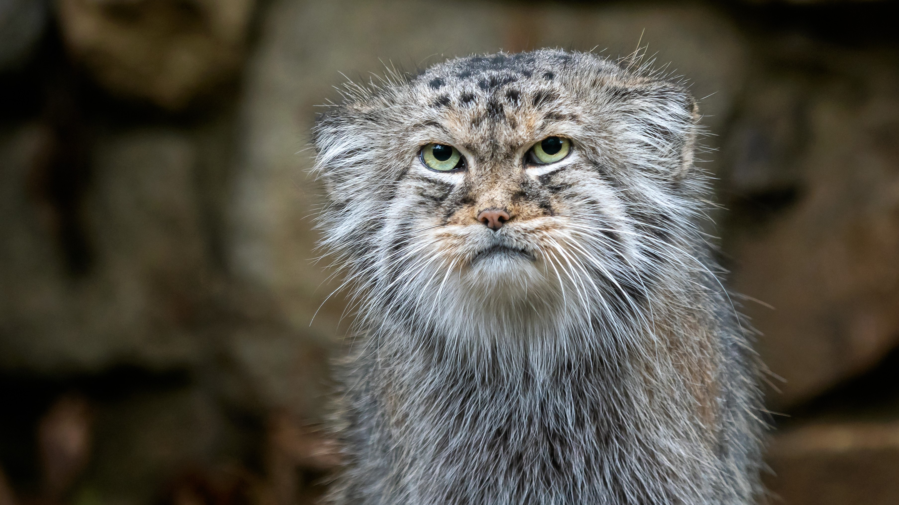
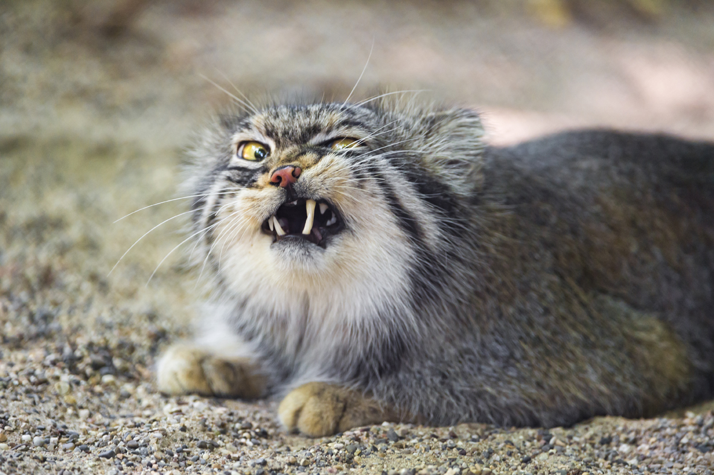
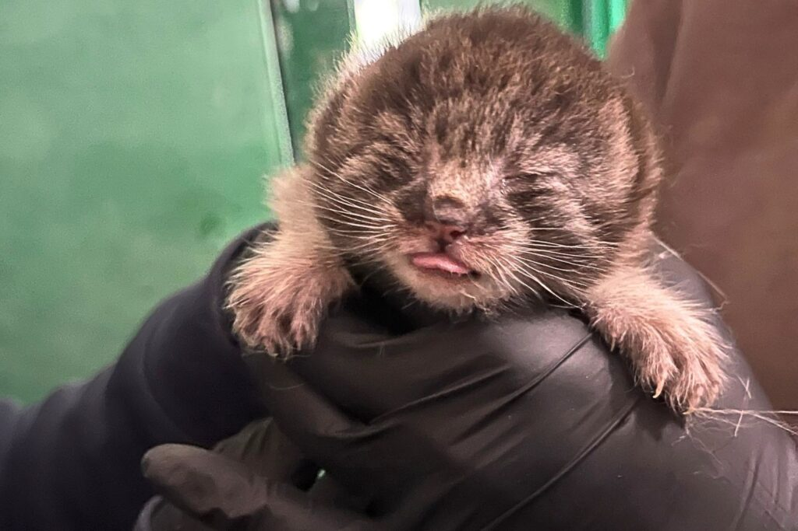

first of all, this dude is round as fuck. evidence below.


we can also observe he is very angry as well. giving you the "i'm going to kill all your loved ones and make you watch" kind of look.
evidence shows this is because, being so round, when he trips he just does not stop rolling. i imagine this is quite frustrating.
also. look at this one i found.

i would be angry if i looked like that too. really reminds me of andrew tate after he got out of prison.
anyway, he is also very cute a lot of the time!!


in conclusion, this is a very round and angry boy, and that pleases me.